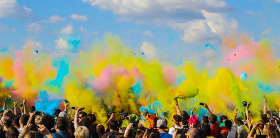

25.Juli 2016 Flashmob in Altbach
Menschen versammeln sich "spontan" - an einem Ort - zu einer bestimmten Zeit - und tun etwas skurriles - applaudieren und gehen wieder nach Hause.Der Flashmob ist bis nach Altbach vorgedrungen. Wir trafen uns um 16:00 Uhr am Rathaus in Altbach, um Farbbeutel in die Luft zu schmeißen. Um 16:15 Uhr war die Show vorbei. Meine Beurteilung: Die Atmosphäre war toll, die Reinigung des Rathausplatzes danach war nicht so toll.

Zeitpunkt der Aktion 16:08 Uhr
 Die TeilnehmerInnen
Die TeilnehmerInnen
 alles verpackt, der Urlaub kann beginnen Uhr
alles verpackt, der Urlaub kann beginnen Uhr